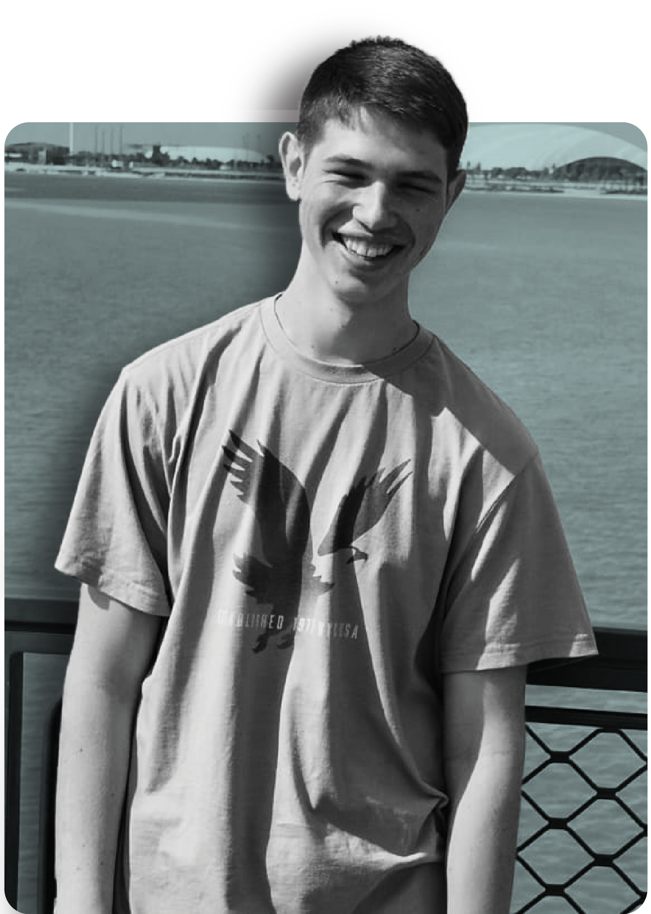

I'm passionate about visual effects and CG, focused on crafting content that captures attention and tells a compelling visual story. My goal is a career where creativity and technical skill meet, producing work that resonates with audiences and elevates the story being told.
I hold myself to a standard of consistency, attention to detail, and creativity on every project, because strong visuals, deliberate pacing, and tight audio sync are what turn a sequence into something that actually lands with a viewer. I take deadlines seriously, treat feedback as fuel for improvement, and keep sharpening both my skills and my workflow.
I'm driven to grow within the VFX industry and stay current with its tools and techniques. Long term, I want to become a versatile, adaptable VFX artist who contributes meaningfully to creative teams, consistently delivering work that enhances the viewer's experience and raises the bar on production quality.
Concept
Block out the idea, references, and shot list before touching software.
Step 1 of 4
Simulate
Build fluid, smoke, or destruction sims in Blender and tune the settings.
Step 2 of 4
Composite
Layer passes, grade, and add post effects in DaVinci Resolve.
Step 3 of 4
Render
Export, review, and deliver the final cut.
Step 4 of 4
Years in CS2
Certifications
Studying at SAE Dubai
Projects
No page builders, no plugins doing the work. Every sim, comp, and line of code is mine.
Concept to simulate to composite to render, the same process on every project.
VFX, web development, and cybersecurity certifications feeding one skill set.
Feedback gets acted on the same day, not the next sprint.
Years of competitive FPS have built the discipline to hit deadlines without cutting corners.
Actively studying VFX and virtual production, picking up new techniques every trimester.